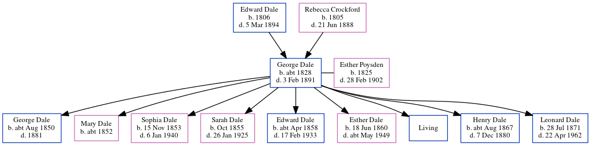

George Dale c1828 - 1891
[ Home ] | [ Calendar ] | [ Surnames Index ] | [ Census Index ] | [ Family History ]The child of Edward Dale and Rebecca Crockford, George Dale, the great-great-grandfather of Nigel Horne, was born in Chartham, Kent, England c. 18281,2,3,4,5,6,7, was baptized in Harbledown, Kent, England on May 11, 1828 and married Esther Poysden (a servant with whom he had 9 children: George, Mary, Sophia, Sarah Ann, Edward, Esther Louisa, William Thomas, Henry and Leonard, along with 1 surviving child) at St Mary's Church in Chartham on Oct 13, 18499 (Chartham Parish Church). Like his father, he was an agricultural laborer.
During his life, he was living in Chartham Hatch, Kent, England on Jun 6, 184114, on Mar 30, 18513, on Apr 7, 186112, on Apr 2, 187113, on Apr 3, 18816 and in 188811.
He died on Feb 3, 1891 in Bridge, Kent, England7,8 and was buried in Chartham on Feb 7, 189110.
Parents
- Edward was born in 1806
- Rebecca was born in 1805
Children
- George was born c. Aug 1850
- Mary was born c. 1852
- Sophia was born on Nov 15, 1853
- Sarah Ann was born in Oct 1855
- Edward was born c. Apr 1858
- Esther Louisa was born on Jun 18, 1860
- Henry was born c. Aug 1867
- Leonard was born on Jul 28, 1871
Citations
- 1841 England Census Online publication - Provo, UT, USA: The Generations Network, Inc., 2006.Original data - Census Returns of England and Wales, 1841. Kew, Surrey, England: The National Archives of the UK (TNA): Public Record Office (PRO), 1841. Data imaged from the National
- 1851 England Census Online publication - Provo, UT, USA: The Generations Network, Inc., 2005.Original data - Census Returns of England and Wales, 1851. Kew, Surrey, England: The National Archives of the UK (TNA): Public Record Office (PRO), 1851. Data imaged from the National
- 1851 England, Wales & Scotland Census - Findmypast (was age 23 and the head of the household)
- 1861 England Census Online publication - Provo, UT, USA: The Generations Network, Inc., 2005.Original data - Census Returns of England and Wales, 1861. Kew, Surrey, England: The National Archives of the UK (TNA): Public Record Office (PRO), 1861. Data imaged from the National
- 1871 England Census Online publication - Provo, UT, USA: The Generations Network, Inc., 2004.Original data - Census Returns of England and Wales, 1871. Kew, Surrey, England: The National Archives of the UK (TNA): Public Record Office (PRO), 1871. Data imaged from the National
- 1881 England Census Online publication - Provo, UT, USA: The Generations Network, Inc., 2004. 1881 British Isles Census Index provided by The Church of Jesus Christ of Latter-day Saints © Copyright 1999 Intellectual Reserve, Inc. All rights reserved. All use is subject to the
- England & Wales, FreeBMD Death Index: 1837-1915 Online publication - Provo, UT, USA: The Generations Network, Inc., 2006.Original data - General Register Office. England and Wales Civil Registration Indexes. London, England: General Register Office. © Crown copyright. Published by permission of the Cont
- England & Wales, National Probate Calendar (Index of Wills and Administrations),1861-1941 Online publication - Provo, UT, USA: Ancestry.com Operations Inc, 2010.Original data - Principal Probate Registry. Calendar of the Grants of Probate and Letters of Administration made in the Probate Registries of the High Court of Justice in England. Londo
- Public Member Trees Online publication - Provo, UT, USA: The Generations Network, Inc., 2006.Original data - Family trees submitted by Ancestry members.Original data: Family trees submitted by Ancestry members.
- Familysearch.org (www.familysearch.org)
- According to mother's death certificate.
- 1861 England, Wales & Scotland Census - Findmypast (was age 32 and the head of the household)
- 1871 England, Wales & Scotland Census - Findmypast (was age 42 and the head of the household)
- 1841 England, Wales & Scotland Census - Findmypast (was age 14)
Media
George Dale - Esther Poysden - Marriage Certificate

England & Wales deaths 1837-2007 Transcription - BMD-D-1891-1-AZ-000101-144
1861 England, Wales & Scotland Census - GBC/1861/0003417880
1871 England, Wales & Scotland Census - GBC/1871/0014163140
England Marriages 1538-1973 - R_848404797
England Marriages 1538-1973 - R_848405232
Kent, Canterbury Archdeaconry marriages - GBPRS/CANT/M/97244282/1
England & Wales marriages 1837-2005 - BMD/M/1849/4/AL/000524/003
1841 England, Wales & Scotland Census - GBC/1841/0014002933
Kent marriages and banns - GBPRS/CANT/M/94078103/1
England Births & Baptisms 1538-1975 - R_884283803
Family Tree
Generated by ged2site. Last updated on Jun 11, 2024